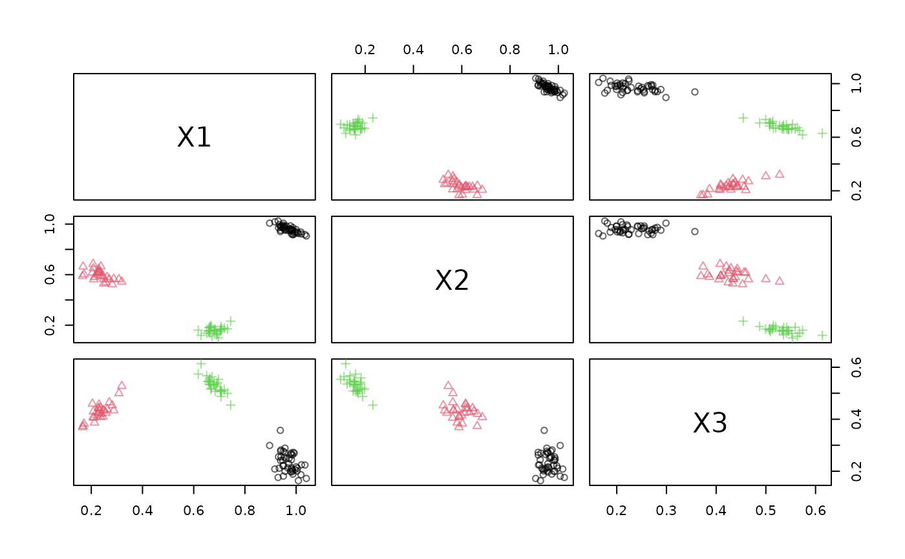

Publish a Data Stream via a Web Service
Source:R/publish_DSD_via_WebService.R
publish_DSD_via_WebService.RdUses the package plumber to publish a data stream as a web service.
Usage
publish_DSD_via_WebService(
dsd,
port,
task_file = NULL,
serializer = "csv",
serve = TRUE,
background = TRUE,
debug = FALSE
)Arguments
- dsd
A character string that creates a DSD.
- port
port used to serve the DSD.
- task_file
name of the plumber task script file.
- serializer
method used to serialize the data. By default,
csv(comma-separated values) is used. Other methods arejsonandrds(see plumber::serializer_csv).- serve
if
TRUE, then a task file is written and a server started, otherwise, only a plumber task file is written.- background
logical; start a background process?
- debug
if
TRUE, then the service is started locally and a web client is started to explore the interface.
Value
a processx::process object created with callr::r_bg() which runs the plumber server
in the background. The process can be stopped with rp$kill() or by killing the process
using the operating system with the appropriate PID. rp$get_result() can
be used to check for errors in the server process (e.g., when it terminates
unexpectedly).
Details
The function writes a plumber task script file and starts the web server to serve the content of the stream using the endpoints
http://localhost:port/get_points?n=100andhttp://localhost:port/info.
APIs generated using plumber can be easily deployed. See: Hosting. By setting a task_file and serve = FALSE a plumber
task script file is generated for deployment.
A convenient reader for stream data over web services is available as DSD_ReadWebService.
See also
Other WebService:
DSC_WebService(),
DSD_ReadWebService(),
publish_DSC_via_WebService()
Other dsd:
DSD_ReadSocket(),
DSD_ReadWebService(),
publish_DSD_via_Socket()
Examples
# find a free port
port <- httpuv::randomPort()
port
#> [1] 9157
# create a background DSD process sending data to the port
rp1 <- publish_DSD_via_WebService("DSD_Gaussians(k = 3, d = 3)", port = port)
rp1
#> PROCESS 'R', running, pid 8178.
# connect to the port and read manually. See DSD_ReadWebService for
# a more convenient way to connect to the WebService in R.
library("httr")
# we use RETRY to give the server time to spin up
resp <- RETRY("GET", paste0("http://localhost:", port, "/info"))
d <- content(resp, show_col_types = FALSE)
d
#> # A tibble: 1 × 3
#> description d k
#> <chr> <dbl> <dbl>
#> 1 Gaussian Mixture (d = 3, k = 3) 3 3
# example: Get 100 points and plot them
resp <- GET(paste0("http://localhost:", port, "/get_points?n=100"))
d <- content(resp, show_col_types = FALSE)
head(d)
#> # A tibble: 6 × 4
#> X1 X2 X3 .class
#> <dbl> <dbl> <dbl> <dbl>
#> 1 0.288 0.567 0.434 2
#> 2 0.930 1.02 0.176 1
#> 3 0.941 0.985 0.255 1
#> 4 0.917 1.02 0.208 1
#> 5 1.00 0.931 0.212 1
#> 6 0.168 0.664 0.374 2
dsd <- DSD_Memory(d)
dsd
#> Memorized Stream
#> Class: DSD_Memory, DSD_R, DSD
#> Contains 100 data points - currently at position 1 - loop is FALSE
plot(dsd, n = -1)

# end the DSD process. Note: that closing the connection above
# may already kill the process.
rp1$kill()
#> [1] TRUE
rp1
#> PROCESS 'R', finished.
# Publish using json
rp2 <- publish_DSD_via_WebService("DSD_Gaussians(k = 3, d = 3)",
port = port, serializer = "json")
rp2
#> PROCESS 'R', running, pid 8360.
# connect to the port and read
# we use RETRY to give the server time to spin up
resp <- RETRY("GET", paste0("http://localhost:", port, "/info"))
content(resp, as = "text")
#> No encoding supplied: defaulting to UTF-8.
#> [1] "[{\"description\":\"Gaussian Mixture (d = 3, k = 3)\",\"d\":3,\"k\":3}]"
resp <- GET(paste0("http://localhost:", port, "/get_points?n=5"))
content(resp, as = "text")
#> No encoding supplied: defaulting to UTF-8.
#> [1] "[{\"X1\":0.1803,\"X2\":0.3369,\"X3\":0.0629,\".class\":1},{\"X1\":0.8567,\"X2\":0.2031,\"X3\":0.2054,\".class\":2},{\"X1\":0.8274,\"X2\":0.2393,\"X3\":0.257,\".class\":2},{\"X1\":0.7668,\"X2\":0.2415,\"X3\":0.2796,\".class\":2},{\"X1\":0.1348,\"X2\":0.3111,\"X3\":0.0842,\".class\":1}]"
# cleanup
rp2$kill()
#> [1] TRUE
rp2
#> PROCESS 'R', finished.
# Debug the interface (run the service and start a web interface)
if (interactive())
publish_DSD_via_WebService("DSD_Gaussians(k = 3, d = 3)", port = port,
debug = TRUE)